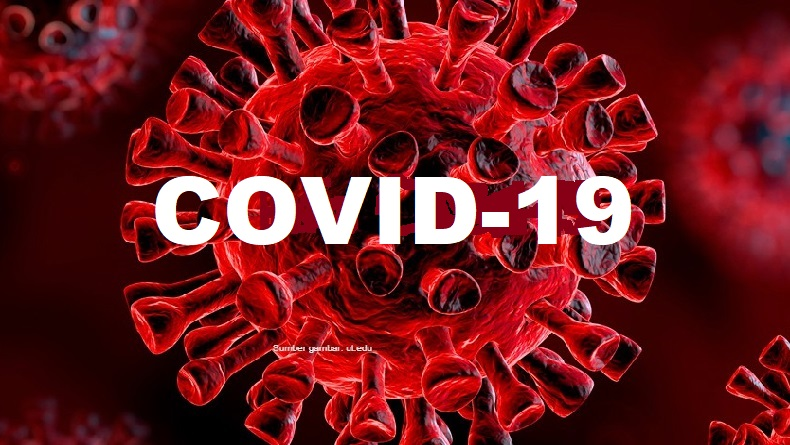
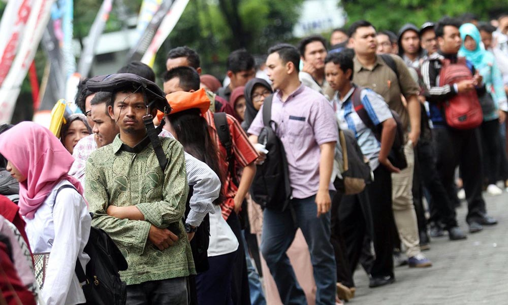

Limbah Plastik Untuk Meningkatkan Perekonomian Masyarakat
Limbah plastik sudah menjadi salah satu kasus limbah yang hingga sampai saat ini memerlukan penindakan lebih, karena disebabkan sifatnya yang membutuhkan waktu lama serta susah untuk didaur ulang.Bermacam aksi oleh pemerintah sudah dicoba untuk mengurangi jumlah limbah plastik semacam pengurangan kandungan plastik dalam sesuatu produk, kantong plastik belanja yang berbayar, pemakaian plastik yang lebih ramah area serta lain sebagainya. Pengurangan pemakaian plastik pada kehidupan tiap hari pula sudah dicoba, tetapi jumlah limbah plastik masih terbilang lumayan banyak, tidak terkecuali di Kota Malang.
Dari informasi DKP Kota Malang, mengatakan kalau di Kota Malang limbah plastik jadi penyumbang limbah paling banyak kedua sehabis limbah organik. Tidak hanya itu, limbah plastik pula memunculkan kasus lain terhadap suatu wilayah, semacam pencemaran air serta tanah akibat dari isi plastik tersebut, serta pencemaran hawa yang disebabkan pembakaran plastik yang pula bisa meningkatkan Global Warming. Perihal tersebut pula berakibat pada kesehatan, semacam timbulnya penyakit kulit, peradangan respirasi serta permasalahan pencernaan akibat area yang telah tercemar oleh limbah plastik. Jangka panjang berikutnya, bisa menimbulkan kanker serta penyakit kronis yang lain.Di sisi lain kedatangan MEA di Indonesia semenjak Desember 2015 sudah membuka babak baru dalam bidang perekonomian antar Negeri ASEAN, tercantum Indonesia.
MEA mempraktikkan sistem pasar leluasa dimana ada kemudahan dalam arus perdagangan di Negeri ASEAN. MEA bertujuan buat tingkatkan stabilitas perekonomian di kawasan ASEAN dan diharapkan sanggup menanggulangi permasalahan– permasalahan di bidang ekonomi antar Negeri ASEAN. Dengan demikian produk lokal Indonesia mempunyai kesempatan buat bersaing dalam pasar yang lebih luas pada pasar ASEAN. Begitu pula sebaliknya, produk ASEAN pula mempunyai kemampuan buat bersaing didalamnya. Memandang keadaan tersebut, produk lokal Indonesia wajib diinovasi supaya bisa bersaing di kancah Internasional. Lewat bermacam kasus tersebut, penulis berinisiatif untuk membuat suatu produk lokal berbahan limbah plastik buat tingkatkan mutu produk lokal, spesialnya di Kota Malang supaya bisa bersaing di pasar Internasional lewat program MEA. Produk tersebut berbentuk Casing Hp yang diiringi ukiran mencuat Topeng Malangan. Pemanfaatan limbah plastik jadi Casing Hp ini dilatarbelakangi oleh banyaknya pemakaian Casing Hp di Indonesia. Bersumber pada informasi yang dilansir didapat mengatakan kalau Nurlita, pebisnis Casing Hp bisa mencapai keuntungan berkisar 50–100 juta tiap bulannya dengan penciptaan 30–50 casing hp tiap harinya.
Perihal tersebut meyakinkan kalau pemakaian Casing Hp di Indonesia sudah jadi suatu tren tertentu. Casing Hp ini hendak terbuat dari limbah plastik dengan bermacam berbagai dimensi serta merk hp cocok dengan kebutuhan konsumen. Bagaikan inovasi dari produk ini, ialah berbentuk akumulasi ukiran mencuat berbentuk topeng Malangan. Ukiran mencuat ini ialah permukaan mencuat yang tidak datar pada bagian hidung, mulut, ataupun mata semacam wujud topeng pada biasanya serta nantinya hendak dilukis cocok kepribadian yang terdapat pada Topeng Malangan.Pemanfaatan desain topeng malangan ini ialah salah satu inovasi produk Casing Hp berciri khas budaya Malang sehingga bisa bersaing secara global.
Diharapkan dengan terdapatnya Casing Hp dengan ukiran mencuat Topeng Malangan ini bisa jadi produk lokal khas Malang yang bisa bersaing di pasar Internasional, salah satunya lewat MEA sekalian bisa menghadirkan budaya tradisional Malang lewat karakteristik khas Topeng Malangan tersebut. Tidak hanya itu pula diharapkan dapat mengurangi jumlah limbah plastik, tingkatkan harga jual limbah plastik di Kota Malang serta pula bisa tingkatkan perekonomian warga Kota Malang sebab pembuatan produk ini memakai bayaran yang sedikit tetapi menciptakan profit yang optimal.
Dampak Buruk Junk Food Untuk Kesehatan Tubuh
Junk Food disebut makanan instan atau makanan cepat saji yang kini udah berkembang pesat di persaingan perusahaan makanan di Indonesia. Makanan cepat saji dinilai sebagian orang lebih efektif terhadap waktu dan mudah ditemukan.
Tidak cuma itu saja, makanan cepat saji juga punya cita rasa yang lezat ditambah lagi harganya yang terjangkau. Makanan cepat saji udah lama mengundang kontroversi di negara kita, karena terungkapnya beberapa dampak buruk yang dia miliki. Dampak buruk itu disebabkan oleh kandungan zat-zat berbahaya di dalam makanan instan seperti lilin yang ada pada mie instan. Tidak berhenti disitu, nyatanya didalam makanan cepat saji terkandung bahan pengawet dan penyedap yang kini disebut micin. Fenomena kata micin kini mendadak kerap digunakan para remaja sampai dewasa kalo seseorang mengalami hal-hal yang kurang normal. Maksud dari hal kurang normal itu, seperti seseorang yang telat berpikir, lama menjawab kalo diajak bicara dan lainnya. Tidak dielakkan, makanan cepat saji memang mengandung zat berbahaya seperti yang udah diungkapkan diatas. Sejumlah penelitian udah membuktikan kalo keseringan mengkonsumsi makanan cepat saja memang tidak berdampak secara langsung ke tubuh.
Tapi, makanan-makanan cepat saji yang dikonsumsi akan tertimbun di dalam tubuh yang kemudian hari menjadi penyebab penyakit mematikan seperti kanker.Tidak cuma kanker, penyakit berbahaya juga mengintai misalnya stroke, usus buntu dan penyakit ginjal.Makanya, kalo kamu termasuk kedalam orang yang hobi mengkonsumsi makanan cepat saja, kurangilah hal itu.Mulai sayangi tubuh dan diri sendiri. Perlu diketahui kalo salah satu kandungan di dalam makanan instan yaitu lilin sulit dicerna tubuh. Lilin itu menghancurkan prinsip kerja sistem pencernaan tubuh, jadi makanan yang mengandung lilin akan dicerna dengan waktu minimal dua hari.
Mengenal Virus Covid-19 Lebih Dalam

Pada akhir tahun 2019 lalu, seluruh dunia digemparkan dengan adanya virus corona yang berpotensi mematikan. Diketahui bahwa virus ini berasal dari Wuhan, China, dan masuk ke Indonesia di awal tahun 2020. Kebiasaan masyarakat di sana yang sering memakan berbagai jenis hewan, hingga diperkirakan bahwa virus ini berasal dari kelelawar yang dikonsumsi mereka. Corona adalah bagian dari keluarga besar virus yang menimbulkan penyakit pada hewan dan manusia. Penyakit ini menyebabkan infeksi pada saluran pernapasan manusia, mulai dari flu hingga penyakit serius seperti MERS (Middle East Respiratory), dan sistem pernafasan akut. Virus ini kemudian diberi nama SARS-COV2 (Severe Acute Respiratory Syndrome Coronavirus 2).
Pada tahun 2003, ditemukan virus serupa yaitu SARS yang diperkirakan penyebabnya sama dengan virus corona. Gejalanya pun hampir sama, hanya saja potensi kematiannya lebih tinggi yaitu 9,6% sedangkan covid-19 kurang dari 5%. Meski begitu, penyebaran covid lebih cepat dan lebih luas dibandingkan SARS. Hingga saat ini, semakin banyak orang yang terpapar covid di Indonesia.Gejala umum yang terjadi pada penderita penyakit corona, yaitu dimulai dengan demam ≥380C, sesak nafas, batuk kering, dan tidak bisa mencium bau apapun dengan hidungnya. Seseorang yang mengalami gejala tersebut ditambah dengan riwayat perjalanan ke luar negeri, biasanya harus didiagnosis lebih lanjut dan statusnya akan berubah menjadi ODP (orang dalam pantauan).
Untuk mengetahui apakah orang tersebut terjangkit corona atau tidak, petugas medis akan melakukan swab test agar hasilnya lebih akurat. Swab test kini tidak hanya digunakan untuk orang-orang yang dicurigai tertular virus saja, namun juga menjadi syarat bagi orang yang akan bepergian ke luar negeri dan luar kota tindakan ini dilakukan untuk meminimalisir penularan virus. Pemerintah Indonesia sudah melakukan berbagai cara untuk menangani wabah virus ini. Mulai dari himbauan untuk berdiam diri di rumah, memindahkan pembelajaran di sekolah menjadi online, menghimbau untuk menggunakan masker saat di luar rumah, memberikan bantuan kepada masyarakat terdampak, dan masih banyak lagi.
Alasan di balik Meningkatnya Angka Pengangguran

Umumnya pengangguran diakibatkan karena lapangan kerja yang terbatas, sehingga tidak semua orang bisa mendapat pekerjaan. Pengangguran menjadi masalah penting dalam ekonomi negara, karena produktivitas dan pendapatan yang terbatas akan mengakibatkan masalah sosial lainnya, mulai dari perceraian dalam rumah tangga hingga tindak kriminal. Persentase pengangguran dapat dihitung dari perbandingan jumlah pengangguran dan jumlah angkatan kerja. Tidak adanya pendapatan, menyebabkan para pengangguran harus membatasi jumlah konsumsi, hal ini menyebabkan menurunnya tingkat kesejahteraan dan kemakmuran. Pengangguran yang berlangsung lama dapat mempengaruhi kesehatan mental seseorang.
Banyak sekali dampak negatif dari tingginya jumlah pengangguran, selain bagi diri sendiri juga bagi negara. Contohnya yaitu dapat menyebabkan kekacauan politik, keamanan sosial, bahkan hingga mengganggu pembangunan ekonomi negara. Efek jangka panjangnya yaitu menurunnya GNP serta pendapatan per kapita negara. Beberapa negara berkembang seperti Indonesia, ada istilah “pengangguran terselubung” artinya sebuah pekerjaan yang seharusnya dilakukan oleh sedikit tenaga kerja, namun malah dikerjakan oleh banyak orang. Hal ini dilakukan untuk memanipulasi jumlah pengangguran dalam suatu negara, atau bisa juga karena beberapa pekerja tidak memenuhi kapasitas, sehingga hasil kerja tidak optimal.
Pemerintah tentu harus mengambil langkah serius untuk menanggapi masalah ini, salah satu upaya untuk mengatasinya yaitu dengan mengadakan program pra-kerja bagi masyarakat pengangguran. Pemerintah memberikan sejumlah dana selama tiga bulan atau lebih, yang nantinya digunakan untuk menambah kualitas individu, sehingga dapat diterima bekerja. Selain itu, beberapa orang pun mulai melakukan bisnis alih-alih kesulitan mencari pekerjaan. Langkah ini tentu menjadi cara paling efektif untuk menghasilkan pendapatan, bahkan tidak sedikit dari mereka yang mulai membuka lapangan pekerjaan bagi orang lain. Setiap individu dituntut untuk kreatif dan kompeten agar dapat memanfaatkan kesempatan yang ada di depan matanya.